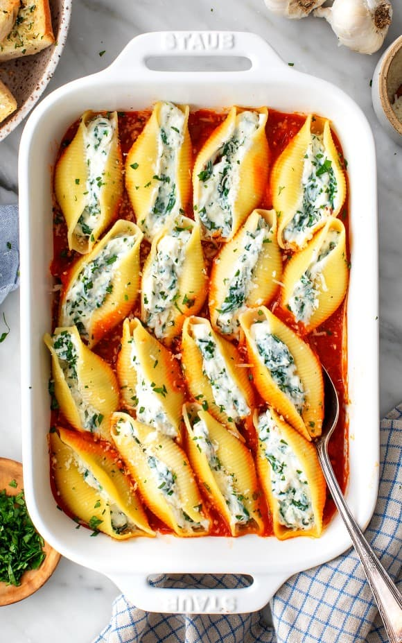

Stuffed Shells

Description
These stuffed shells are saucy, cheesy comfort food at its best. I love the contrast of the chewy pasta with
the creamy ricotta filling, and marinara – store-bought or homemade – is the perfect tangy accent for both.
After I eat one helping, I always find myself back in the kitchen, unable to resist the allure of seconds.
These stuffed shells are just that good!
This stuffed shells recipe is easy to make (and make ahead!), and it’s great for serving a group. If you’re
hosting a dinner party or get-together this season, it would be a fantastic dish to add to the menu. Comforting
and classic, it’s guaranteed to be a hit.
Ingredients
- 18 to 20 jumbo pasta shells
- Extra-virgin olive oil, for drizzling
- 5 ounces fresh spinach
- 2 cups ricotta cheese, 16 ounces
- 1/4 cup grated pecorino cheese, plus more for sprinkling
- 2 garlic cloves, grated
- 1 teaspoon dried oregano
- 1 teaspoon lemon zest
- 1/4 teaspoon red pepper flakes
- 1/4 teaspoon sea salt, plus more for the pasta water
- Freshly ground black pepper
- 2 cups Marinara Sauce, plus more for serving
- Chopped fresh parsley, for serving
Steps
-
Preheat the oven to 425°F.
- Place the spinach in a steamer basket and set over a pot with 1-inch of water. Bring the water to a simmer,
cover, and let steam for 1 minute, until the spinach is wilted. Transfer to a strainer and squeeze out the
excess water and chop the spinach.
- In a large pot of salted boiling water, cook the pasta shells for 10 minutes, until al dente. Drain and drizzle
with a little olive oil to keep them from sticking together.
- In a medium bowl, combine the spinach with the ricotta, pecorino, garlic, oregano, lemon zest, red pepper flakes,
salt, and several grinds of pepper.
- Spread the marinara in the bottom of a 9x13 baking dish. Stuff each shell with the filling and place in the dish.
Cover with foil and bake for 20 minutes. Serve with more marinara on the side.